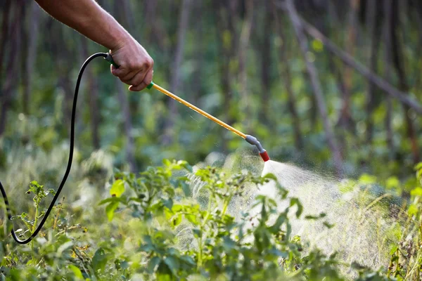
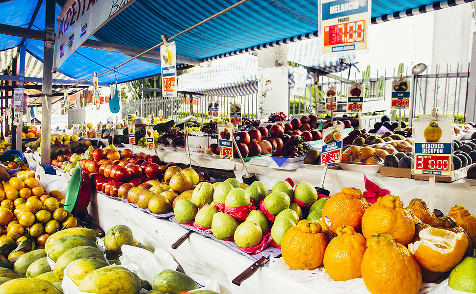

COMO A COMIDA CHEGA À SUA MESA?

Do campo à mesa: Quando algum alimento chega até a mesa da sua família, ele já percorreu um longo caminho, desde o processo de plantio, colheita, armazenamento e transporte, até chegar ao local de venda para ser comercializado. Parece bastante óbvio e simples, porém quando falamos em alimentação, precisamos pensar em qualidade e segurança.
É preciso também considerar os processos que o alimento passa, o uso de recursos naturais, as pessoas, a infraestrutura e as leis que regem tudo ao nosso redor. A junção da cadeia produtiva e todos esses outros elementos formam o sistema alimentar.
COMBATER PARA COLHER: Lavoura é como uma indústria a céu aberto e, portanto, suscetível aos efeitos das variações climáticas, pragas e doenças que atacam os cultivos. E elas são muitas!
Insetos, fungos, bactérias, nematóides… Tem uma infinidade de organismos capazes de causar muito prejuízo. E ainda tem plantas invasoras que concorrem com a lavoura por água, nutrientes e luz solar. Então, combater os inimigos é fundamental para assegurar boas colheitas, em quantidade e qualidade.


DO CAMPO PARA AS FEIRAS: São muitas as variáveis que podem afetar nossos alimentos. Quando falamos sobre hortifruti, os produtores levam em conta as condições de cultivo e colheita para evitar grandes danos. Porém, depois de colhidos, esses vegetais precisam passar por diferentes etapas, como: limpeza, seleção, proteção, embalagens e bom armazenamento; para que possamos ter um vegetal fresco e nutritivo como comida.
Todo esse processo pós-colheita também é essencial para nos fornecer um alimento seguro e que tenha um grande período de vida útil. Os tratamentos pós-colheita dão proteção às frutas e aumentam a sua qualidade.
Foi graças aos tratamentos pós-colheita que se desenvolveu o atual comércio global de frutas e legumes. Se hoje encontramos frutas na feira ou no mercado que vieram de lugares distantes, agradeça à ciência que encontrou saídas para garantir que os alimentos colhidos em municípios distantes pudessem viajar sem perder cor, sabor, textura e tudo que nos agrada e nos permite dizer que o produto está fresco e gostoso.